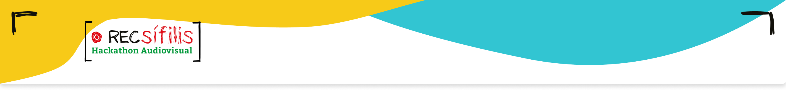
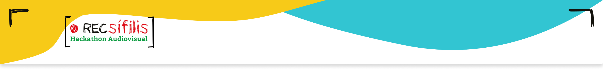

REGULAMENTO
A sífilis é uma infecção sexualmente transmissível (IST) considerada como um problema de saúde
pública em vários países desenvolvidos e em desenvolvimento. No Brasil, o aumento do número de casos
da doença e o crescimento das taxas de morbidade e mortalidade fez com que o Ministério da Saúde
decretasse estado de epidemia em 2016. As gestantes e recém-nascidos são os mais acometidos.
Tendo em vista que a doença sempre foi negligenciada, muitas pessoas têm informações erradas a seu
respeito e parte da população sequer sabe que ela existe, esse é um grande desafio a ser superado.
Soma-se também o grande tabu que existe na população para não falar sobre a doença, um comportamento
que precisa mudar e você pode fazer parte disso.
A sífilis é classificada em sífilis adquirida, quando a doença é desenvolvida na população geral a
partir dos 13 anos de idade e a transmissão ocorre, principalmente, através da relação sexual
desprotegida; sífilis em gestantes, quando a doença se apresenta durante o período gestacional, ou
sífilis quando transmitida da mãe para o filho, causando a sífilis congênita. Embora exista
tratamento disponível, se não tratada, pode causar problemas neurológicos e cardiopáticos. Em bebês,
o sistema auditivo pode ser comprometido, dentre outros agravos.
Em relação à sífilis congênita, foco da presente ação, o desafio é ainda maior, ante a necessidade
de testar e tratar gestantes e parcerias. Segundo dados do boletim epidemiológico brasileiro, a taxa
de sífilis congênita no ano de 2016 era de 7,4 casos para cada 1000 nascidos vivos. Essa taxa
aumentou até 2018, onde atingiu a sua maior série histórica, chegando a 9,0 casos por 1000 nascidos
vivos. A partir de 2018, as taxas de sífilis congênita começam a reduzir, terminando o ano de 2020
com 7,7 casos por 1000 nascidos vivos.
Acredita-se que expor a doença, seu tratamento, testagem e seus males ajude a romper tabus, amplie o
acesso à testagem e ao tratamento que são gratuitos no Sistema Único de Saúde (SUS) no Brasil.
Prova disso é o projeto "Sífilis Não", realizado pelo Laboratório de Inovação Tecnológica (LAIS),
junto com o Núcleo de Estudos em Saúde Coletiva (NESC), ambos da Universidade Federal do Rio Grande
do Norte - UFRN, com parceria do Ministério da Saúde, tem realizado pesquisas e ações principalmente
nos seguintes eixos: gestão e governança, vigilância, cuidado integral, educação e comunicação.
O trabalho desenvolvido aponta avanços importantes sobretudo em relação a enfermidade especialmente
a sífilis congênita, apontando uma tendência de redução no número de casos conforme pode-se observar
no gráfico/ tabela:
O audiovisual tem grande importância como suporte em ações de intervenção na área da saúde com
potencial para intervir na sociedade ao integrar ações de prevenção de doenças e promoção da saúde.
Além disso, podem viabilizar o acesso à informação e às novas formas de pensar e agir. A relevância
aumenta com as redes sociais, que amplificam ainda mais o alcance, atingindo de maneira mais
específica os públicos-alvo que desejados.
Reconhecemos as conquistas, mas precisamos avançar. Convidamos você a participar do RECSífilis:
Hackathon audiovisual. Para participar, basta ser estudante de graduação em qualquer curso da área
de comunicação social de instituições de ensino superior públicas e privadas, devidamente
reconhecidas pelo MEC. Atente-se ao regulamento. Use seu talento e criatividade para produções
audiovisuais. Ajude a sensibilizar as pessoas, informá-las e promover ciência humanitária.
1. DO OBJETO
1.1 Desenvolver vídeos em formatos e narrativas inovadores que contribuam de forma inteligente, persuasiva e educativa para a prevenção e o enfrentamento da sífilis em gestantes e sífilis congênita , com foco no diagnóstico precoce e no incentivo ao tratamento do agravo.
2. DAS CONDIÇÕES PARA PARTICIPAÇÃO
2.1 Poderão se inscrever e participar do evento estudantes de graduação em qualquer curso da área de
comunicação social de instituições de ensino superior públicas e privadas, devidamente reconhecidas
pelo MEC, em todo o território brasileiro.
2.2 Cada equipe inscrita deve ser composta por, no máximo, 3 (três) participantes. O critério para a
distribuição das tarefas é de inteira responsabilidade e definição das equipes.
2.3 Poderá se inscrever e participar do evento qualquer interessado, desde que maior de 18 (dezoito)
anos.
2.4 Pessoas com qualquer tipo de vinculação com o LAIS no momento da inscrição não poderão
participar.
2.5 As peças deverão ser autorais e originais, sendo vetado o uso de imagens de terceiros regidas
por direitos autorais.
2.6 Reconhece, o participante, que sua participação no evento é feita de forma gratuita e
não-onerosa, bem como, na hipótese cabível, não constitui compromisso ou promessa de qualquer
relação presente ou futura com o LAIS.
2.7 Os participantes devem dispor de seus próprios equipamentos para realização das atividades do
RECSífilis: Hackathon audiovisual. A responsabilidade pelo transporte e segurança de tais
equipamentos, bem como a utilização dos mesmos durante todo o evento, fica por conta de cada
participante.
2.8 Quaisquer normas de segurança ou de identificação de equipamentos deverão ser estritamente
seguidas pelos participantes.
2.9 É aconselhável que todos os participantes se apropriem previamente dos temas relacionados à
problemática da sífilis. No Anexo X consta uma lista de sugestões de conteúdos.
2.10 Interessados que, porventura, não possam participar do Evento, poderão ficar em nossa base de
dados para participação em possíveis eventos futuros. Fica consignado, contudo, que o Laboratório de
Inovação Tecnológica em Saúde (LAIS) não faz qualquer declaração, nem se obriga, de qualquer
maneira, perante aos inscritos no cadastro reserva em relação a qualquer evento, fato ou ato futuro.
2.11 ESCREVER SOBRE QUE O VAMOS PAGAR A VINDA DAS EQUIPES PARA NATAL.
3. DAS PEÇAS DESENVOLVIDAS
3.1 Os vídeos produzidos para a Fase 1 e Fase 2 devem ser autorais, inéditos e ter, no máximo, 1
minuto de duração. Será dada uma tolerância de, no máximo, 3 segundos.
3.2 O estilo e a edição dos vídeos são livres, desde que respeitada a temática: prevenção e o
enfrentamento da sífilis em gestantes e sífilis congênita, com foco no diagnóstico precoce e no
incentivo ao tratamento do agravo.
4. DAS INSCRIÇÕES
4.1 As inscrições deverão ser feitas entre os dias 10 de março de 2022 a 10 de abril de 2022 por
meio do site https://sifilisnao.com.br. Após o preenchimento do formulário, os interessados devem
dar o aceite online do regulamento e submeter o vídeo no local indicado no site mencionado acima.
4.2 Cada equipe inscrita só poderá concorrer com 01 (um) vídeo, captado em qualquer tipo de
equipamento que produza imagens em movimento. Os vídeos devem ser enviados na resolução de 1080p HD,
em MP4. Aceita-se também em formatos WMV, .AVI, .MOV.
4.3 Ao se inscrever, o participante autoriza, expressamente e para todos os fins de direito, a
utilização de sua imagem e voz, em caráter gratuito e não comercial, decorrentes de fotos e
filmagens realizadas nos dias do evento.
4.4 Ao se inscrever, o participante autoriza que seus dados pessoais sejam tratados pela XXXXXXXX,
desde que esse tratamento se dê apenas para garantir o bom andamento do evento .
4.5. A aceitação online dos termos deste Regulamento pelos participantes, condição prévia para a
participação regular no RECSífilis: Hackathon audiovisual, implicará na expressa autorização e
licenciamento gratuitos, mundiais, livres de pagamento de royalties, por prazo indeterminado ao
Laboratório de Inovação Tecnológica em Saúde e a Universidade Federal do Rio Grande do Norte, para
fins de reprodução parcial ou integral, edição, adaptação, tradução para qualquer outro idioma,
publicação, transmissão, emissão, distribuição e comunicação ao público por quaisquer meios e em
quaisquer formatos de:
- a) nome, imagem, vídeo e voz dos participantes que poderão ser gravados durante o período de participação neste Evento, a critério da equipe organizadora;
- b) divulgação dos vídeos que forem selecionados e aprovados.
5. DAS ETAPAS
5.1 Veiculação das peças - 11/04/2022 a 30/04/2022 - Veiculação das peças no Instagram em um perfil
escolhido pela equipe participante, que deverá ser informado no formulário de inscrição. Peças
publicadas depois de 30 de abril de 2022 não serão avaliadas. A partir do momento que publicadas no
canal as peças já deverão ser promovidas em todas as redes sociais que a equipe tiver acesso, tendo
em vista elevar o alcance da peça audiovisual.
5.2 Captura de tela - 01/06/2022 - As equipes devem printar a tela do vídeo, de modo a capturar o
número de visualizações e curtidas e submeter o arquivo no sistema de inscrições até às 23h59.
5.3 Avaliação dos vídeos 02/06/2022 a 20/07/2022 - A Comissão Julgadora avaliará todos os vídeos de
acordo com o item 6 e elegerá as 10 melhores equipes. O resultado será divulgado no dia 21/07/2022.
5.4 Evento presencial - As 10 equipes vencedoras receberão um novo desafio para produzir uma peça
audiovisual durante os dias 16 e 18 de setembro de 2022 em um evento presencial em Natal-RN para
apresentação e julgamento de novas peças. Serão premiadas as 3 (três) melhores peças audiovisuais.
6. DOS CRITÉRIOS DE AVALIAÇÃO
6.1 A Comissão Julgadora será composta por membros do Laboratório de Inovação Tecnológica em Saúde
da Universidade Federal do Rio Grande do Norte e do Centro de Apoyo a la Investigación de Creación
de Contenidos Audiovisuales y Digitales da Universidade Complutense de Madri (CREAV/UCM).
6.2 A comissão julgadora analisará se o vídeo e a documentação estão em conformidade com o
especificado pelo edital, desclassificando aquelas que não atendam a tais especificações.
6.3 Serão dadas para cada vídeo notas de 1 a 5, sendo, onde:
| Item | Nota |
|---|---|
| Regular | 1 |
| Bom | 2 |
| Muito bom | 3 |
| Ótimo | 4 |
| Excelente | 5 |
6.4 As notas serão dadas de acordo com os seguintes critérios:
- a) Adequação ao tema proposto;
- b) Criatividade e inovação nas formas de apresentação do conteúdo;
- c) Originalidade e narrativa;
- d) Engajamento nas redes sociais;
- c) Capacidade educomunicativa.
8. PREMIAÇÃO
8.1 Os participantes dos grupos vencedores farão jus aos seguintes prêmios:
- 1o Lugar: Imersão de um mês com a equipe do Centro de Apoyo a la Investigación de Creación de Contenidos Audiovisuales y Digitales da Universidade Complutense de Madri (CREAV/UCM).
- 2o Lugar: Imersão de um mês com a equipe de comunicação do Laboratório de Inovação Tecnológica em Saúde da Universidade Federal do Rio Grande do Norte em Natal/RN.
- 3o Lugar: Imersão de uma semana com a equipe de comunicação do Ministério da Saúde em Brasília. 8.2 Todos os participantes receberão certificados de atividade de extensão expedidos pela Universidade Federal do Rio Grande do Norte - UFRN.
9. DISPOSIÇÕES GERAIS
9.1 O ato de inscrição implica o conhecimento e a integral concordância do proponente com as normas
e com as condições estabelecidas neste Edital.
9.2 O participante autoriza o LAIS a divulgar seu nome e o título do projeto, tal qual informado na
ficha de inscrição para fins estatísticos e de divulgação dos resultados do RECSífilis: Hackathon
audiovisual.
9.3 O participante deverá manter o mais absoluto sigilo com relação a qualquer informação recebida
proveniente da participação no evento, bem como a LAIS se compromete, desde já, a manter sigilo
total de todos os dados enviados pelos Participantes. O banco de dados gerado em função das
inscrições será de inteira propriedade do LAIS, que poderá utilizá-lo sem qualquer ônus, para fins
lícitos, da forma que melhor lhe aprouver.
9.4 O participante autoriza o LAIS a divulgar seu nome e o título do projeto, tal qual informado na
ficha de inscrição para fins estatísticos e de divulgação dos resultados do RECSífilis: Hackathon
audiovisual.
9.5 Quaisquer dúvidas, divergências ou situações não previstas neste Regulamento serão julgadas e
decididas de forma soberana e irrecorrível pela organização do Evento.
9.6 A participação na RECSífilis: Hackathon audiovisual, através da efetivação da inscrição,
conforme definido acima neste Regulamento, bem como o posterior aceite online, implicam no
conhecimento e total aceitação deste Regulamento.
9.7 Os participantes vencedores ou qualquer dos participantes não terão direito ao recebimento de
quaisquer valores, seja a que tempo e/ou a que título for, em virtude de qualquer forma de
utilização, divulgação e reprodução.
9.8 Os participantes concordam que a propriedade intelectual dos vídeos desenvolvidos durante o
RECSífilis é de propriedade compartilhada entre os mesmos e a Universidade Federal do Rio Grande do
Norte. Os participantes declaram, ainda, que qualquer funcionalidade dos respectivos projetos, bem
como os próprios projetos desenvolvidos para a participação neste Evento não ofendem ou transgridam
quaisquer direitos de terceiros, especialmente direitos de propriedade intelectual; não são
ofensivos, injuriosos, difamadores; nem são de qualquer forma ilegais ou ilícitos.
9.9 O participante concorda em indenizar e ressarcir o LAIS caso este venha a ser questionada por
quaisquer das hipóteses previstas acima.
9.10 Se o RECSífilis: Hackathon audiovisual, de acordo com os critérios estabelecidos única e
exclusivamente por ele mesmo, concluir que qualquer participante obteve qualquer vantagem indevida
mediante a utilização de meios fraudulentos e/ou quaisquer outros mecanismos considerados
inadequados pela organização do Evento, o referido participante, bem como seu grupo, será
imediatamente desclassificado.
9.11 Quaisquer disputas, controvérsias ou reclamações que surgirem entre os participantes e o
RECSífilis: Hackathon audiovisual, relacionadas aos termos deste Regulamento deverão ser,
exclusivamente, dirimidas perante o Foro da Comarca da Cidade do Natal, com exclusão de qualquer
outro por mais privilegiado que seja.
| ETAPA | DATA |
|---|